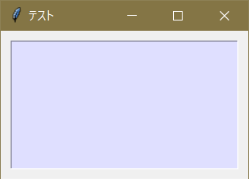
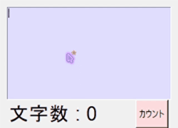
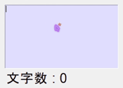

テキストの定義、カスタマイズ
テキストの作成には Text() を用いる。
tex = t.Text()
テキストの設置にも pack() か place() を用いる。そしてこれまでと同じように width 、 height 、 font 、 foreground などのオプションが利用できる。詳しくは第３章
実行例１
import tkinter as t
app = t.Tk()
app.title( 'テスト' )
app.geometry( '250x150' )
tex = t.Text( background = '#DFDFFF' )
tex.place( x = 10, y = 10, width = 230, height = 130 )
app.mainloop()
実行結果

s = tex.get(「開始位置」、「終了位置」) #開始位置から終了位置までにある文字列を取得する
例えばテキストの内容を最初から最後まで全部取得したければ下記のようにする。
s = tex.get( 0., t.END )
t.END とはtkinterにて文字列の末尾をあらわすもので、使用する機会が多いと思うので覚えておきたい。
また、
テキストはエントリーと異なり、開始位置や終了位置を「行番号.左からの文字数」で表記する
なので、テキストの１行目の１文字目＝0.0番目、３行目の２文字目＝2.1番目になる。
（※ Pythonでは「0.0」や「1.0」などを略して「0.」、「1.」と記すことができる。上の例ではこれを利用し小数点を短く書いている。）
get() で取得した値は全てstr型だ。
>> print( type( tex.get( 0., t.END ) ) )
<class 'str'>
なので、入力値を数値として扱いたいときは下記のようにするとよい。
#整数値として受け取る
s = int( tex.get( 0., t.END ) )
#小数点ありで受け取る
s = float( tex.get( 0., t.END ) )
テキストに文字列を挿入する。
テキストに文字列を挿入するには insert() を用いる。insert() の構文は下記だ。
tex.insert(「挿入したい箇所」,「挿入する文字列」)
例えば 'あ' を挿入したければ下記だ。
#１行目１文字目に挿入
tex.insert( 0., 'あ' )
#２行目３文字目に挿入
tex.insert( 1.2, 'あ' )
#末尾に挿入
tex.insert( t.END, 'あ' )
また、文字列の挿入はもともとそこにあった文字が上書きされることを留意する必要がある。
「 'あ' ＋ 入力した文字列 」 にしたければ下記のようにすればよい。
#「'あ' + 入力した文字列」を変数に格納
s = 'あ' + tex.get( 0., t.END)
#テキストの内容を削除する
tex.delete( 0., t.END )
#テキストにsを挿入する
tex.insert( 0., s )
ここで使用した delete() の説明は次節"テキストの内容を削除する"にて行う。
テキストの内容を削除する。
テキストの内容を削除するには delete() を用いる。delete() の構文は下記だ。
tex.delete(「開始位置」,「終了位置」) #開始位置から終了位置までにある文字列を削除する
使用例を挙げる。
#１行目１文字目を削除
tex.delete( 0., 0.1 )
#１行目２～３文字目を削除
tex.delete( 0.1, 0.3 )
#全てを削除
tex.delete( 0., t.END )
ここまでの知識を用いて、ボタンを押すとテキスト内の文字数を数えてラベルに表示するプログラムを記載する。
実行例２
import tkinter as t
def func(event):
s = len( tex.get( 0., t.END ) ) - 1
cnt['text'] = '文字数 : ' + str(s)
app = t.Tk()
app.title( 'テスト' )
app.geometry( '250x180' )
tex = t.Text( background = '#DFDFFF')
tex.place( x = 10, y = 10, width = 230, height = 130 )
cnt = t.Label( text=u'文字数 : 0', font=( 'Arial', 20 ) )
cnt.place( x=10, y=140 )
but = t.Button( text=u'カウント', background='#FFDFDF' )
but.place( x=190, y=140, height=40 )
but.bind( '<Button-1>', func )
app.mainloop()
実行結果（gif画像）

実行例３
import tkinter as t
def func(event):
s = len( tex.get( 0., t.END ) ) - 1
cnt['text'] = '文字数 : ' + str(s)
app = t.Tk()
app.title( 'テスト' )
app.geometry( '250x180' )
tex = t.Text( background = '#DFDFFF')
tex.place( x = 10, y = 10, width = 230, height = 130 )
cnt = t.Label( text=u'文字数 : 0', font=( 'Arial', 20 ) )
cnt.place( x=10, y=140 )
app.bind( '<Key>', func )
app.mainloop()
実行結果（gif画像）

#左寄せ
tex[ 'justify' ] = t.LEFT
#中央寄せ
tex[ 'justify' ] = t.CENTER
#右寄せ
tex[ 'justify' ] = t.RIGHT
#また、エントリーの定義時に指定することもできる。
#左寄せ
tex = t.Text( justify = t.LEFT )
#中央寄せ
tex = t.Text( justify = t.CENTER )
#右寄せ
tex = t.Text( justify = t.RIGHT )
スクロールバーを作る
スクロールバーの作成には複数のステップを要する。詳しくは第７章："スクロールバー"を参照。
その他オプション
代表的なものをいくつか挙げる。
| キーワード |
意味 |
| blockcursor |
テキスト内のカーソルを四角にするかどうか |
| spacing1 |
テキストの最初に使用する空白の数
spacing2→行間、spacing3→最後 |
| undo |
元に戻す機能（Windowsの Ctrl + z 等）を許可するかどうか |
| maxundo |
undoの最大回数回数を指定する
０未満を指定した場合は無限 |
| xscrollcommand |
横軸にスクロールバーを紐づける。
詳しくは第７章を参照 |
その他のオプションに関しては外部サイトで詳しいものが複数あるので下記リンク先などをご参照いただきたい。
"【Python GUI Tkinterリファレンス】Text(入力テキストボックス)のオプション"
(https://suzutaka-programming.com/tkinter-text-option/)